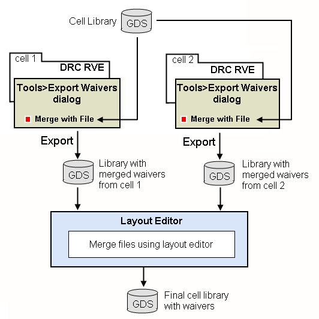

If you are providing
waiver-corrected design cells, such as an IP library, you can embed
the waiver shapes in the design. The waivers are then automatically
enforced in any design that uses the waiver-corrected cells.
If you do not want to embed waiver shapes
in the main design, then see “Creating Non-Embedded Waiver Shapes Using Calibre RVE”.
You can embed waiver shapes in a GDS or OASIS
format design using Calibre RVE for DRC and create the waiver criteria
and waiver verification setup files needed to run Calibre Auto‑Waivers
using the waiver-corrected IP or cell blocks. An overview of the
process is shown in the following figure for an IP library with
GDS assumed as the layout format.
Figure 1. Creating Waiver-Corrected IP
Using Calibre RVE
The Calibre RVE method is often preferable
to using the waiver_flow tool because you can see the geometry as
you are waiving the result. The waiver_flow tool is used for batch
waiver generation.
The drc_waiv_asc2gds command enables batch conversion
of a Calibre RVE .waived file to a geometric
waiver database. This is useful if you already have Calibre RVE
.waived files that you would like to convert
to waiver geometry.
Procedure
- Open the results database
for the first library cell in Calibre RVE using one of the following
menus, depending on your layout editor:
Calibre DESIGNrev —
Other layout editors —
- Review and highlight the results
as needed.
- Waive the results using one
of these methods:
Automatic —
If results are already waived in the results database for the cell
from a previous Calibre RVE session, then the database.waived file
is automatically loaded.
Import file —
Choose in
Calibre RVE.
Use this method if another
group provides the database.waived file for
Calibre RVE.
Note: Calibre RVE automatically
saves the file database.waived for each results
database that has waived results.
Manual method —
Right-click each check or result to be waived and choose .
Alternatively, you can waive multiple results by using Shift- and Ctrl-click
to select all results to be waived, then right-clicking the cluster.
Note: In general,
it is best to waive an error at the lowest possible level of the
hierarchy.
- Choose .
Settings from your most recent
Calibre RVE session are used to populate the fields in the Export
Waived Results dialog box.
Note: The settings
used to populate Calibre RVE for a waiver export are loaded from
the ~/.rvedb setup file.
- Click the Design tab
to specify the database to which you want to write the waiver shapes:
- Select GDSII or OASIS for
the Export format.
- Specify the name of the final
merged design file in the “Output file” text field. This file must
already exist.
- Specify a waiver setup file,
merging options, and waiver cell placement as follows:
- Click the Options tab.
- (Optional) Read layer and
datatype numbers for the waiver shapes and text annotations from
a waiver setup file as follows:
- Enable the “Merge from file”
option to specify a merged waiver database.
This method is typically used when creating waivers
for an IP cell library.
- Specify the database to merge
the waiver shapes with the following options:
Output file —
Adds the new waiver shapes to the file specified for Output file on
the Design tab. The output file must already exist; it is overwritten
when the waivers are exported.
Other file —
Merges the new waiver shapes with the specified database. The merged
database is saved to the new file specified by Output file on the
Design tab. Output file is overwritten if it exists.
- (Optional) Enable the “Place
waiver cells in intermediate cell” option to place waiver cells
in an intermediate cell instead of the parent cell. See “Intermediate Container Cells”; also see ADD_WAIVER_HIERARCHY
in the section “Waiver Setup File Format for Waiver Verification”.
This option is automatically
enabled if Annotate waiver cells with IP_MATCH checksum text is
selected on the IP_MATCH tab.
Note: It is
not necessary to specify “Output precision” or “Magnify coordinates
by” if “Merge from file” is enabled. If “Merge from file” is enabled
and the precision of the DRC results database differs from the precision
of the layout database the waivers are being merged into, Calibre
RVE prompts you to select an option to resolve the problem.
- Enable the remaining options
on the Options tab as follows:
Text Magnification —
Specify a magnification value for the generated text.
Annotate waiver cells with checksum text —
(Recommended) Write a geometry checksum to new waiver cells.
Annotate waiver cells with rule checksum text —
Write rule checksum text to new waiver cells using the rule file
specified in the Rule File field. This ensures that the rule used
to generate the result does not change when applying the waivers
during a verification run. To see how to apply waivers with rule checksums
in a verification run, refer to “Using Rule Checksums in calibre -waiver”.
Note: To use rule checksums, you
must enable the legacy Calibre Auto-Waivers engine by setting the
CALIBRE_WAIVER_OLD_ENGINE environment variable. See “Calibre Environment Variables”.
Annotate waiver cells with Calibre version text —
Annotate waiver cells with a text object indicating the Calibre
version.
See “Text Object Annotations”.
- (Optional) Click the Criteria tab
and enable “Annotate waiver cells with waiver criteria text” if
you want to annotate the waiver cells with the waiver criteria.
These criteria can later be
extracted automatically with the EXTRACT option for WAIVER_CRITERIA
in the waiver setup file. See “Waiver Setup File Format for Waiver Generation” for a description of the setup
file commands.
The following additional option
is available:
Input waiver criteria file(s) —
By default, Calibre RVE annotates waiver cells with a global criteria
of SINGLE 100 100. If non-default criteria values are desired, this
dialog box may be used to specify the path to a waiver criteria
file containing different criteria settings.
The waiver information is added
to the waiver cell as text objects; see “Text Object Annotations” for a description of the text
annotations.
Note: Ensure
that the layout editor is configured to export text objects based
upon layer and texttype.
- (Optional) Click the Layers tab
to define non-default layer and datatype settings for your exported
waiver shapes.
- Specify the Layer number and
Datatype number for the waiver shapes. If you imported a waiver
setup file in Step 66.b, then these fields are populated
from the waiver setup file.
CAUTION: The layer and datatype
number combination for the waiver shapes should not be used in the
layout database the waivers apply to, nor should the combination
be used in the rule file for layer mapping or mask results output.
- Click Export to
create the waiver geometry file specified in Step 55.b.
- (Optional) Choose to
write a text report of the waivers in the output database.
This can be used when you write the waiver criteria
file.
- If you need to process waivers
in another cell, open the results database for the next cell. In
Calibre RVE, choose .
Proceed with applying waivers
and creating a new waiver-embedded output file with this cell, as
described in Steps 3 through 10.
- If you output multiple cells
when exporting waiver geometry, merge all output designs into one
waiver-corrected IP design using your layout editor.
If you are applying waivers to a library, the objective
is to produce a single design that contains all the waiver-corrected
design cells in the library.
- Write the waiver verification
setup file if you do not already have one. See “Writing the Waiver Criteria File for Waiver Verification”.
If you annotated the waiver
cells with waiver criteria text (Step 7), you can use the EXTRACT pathname option
or the APPEND pathname option
with the WAIVER_CRITERIA parameter. The EXTRACT option instructs
Calibre Auto-Waivers to use the text annotations to construct the
waiver criteria file. The APPEND option instructs Calibre Auto-Waivers
to use the text annotations to append to an existing waiver criteria
file.
- Write the waiver criteria
file if you did not do so as part of the waiver export process (Step 7) and you are not using the
EXTRACT or APPEND options with the WAIVER_CRITERIA parameter in
the waiver verification setup file. See “Waiver Criteria File Format.”
If you created a waiver report
for each cell in Step 10, you can use these reports
to help write the waiver criteria file.
- Ensure your rule file Precision and your DRC Results Database Precision match (they do by default). Otherwise,
scaling can occur.
- Hand off the waiver-corrected
IP design (from Step 12), waiver criteria file (if
a separate one is generated), and waiver verification setup file
for verification.
Results
For single edge errors, Calibre RVE
expands each edge by 0.005 user units in both directions to create
a polygon. If the error output is an edge cluster, then the waiver
output is converted to a polygonal region. If a waiver cell would
contain only degenerate (zero area) polygons, the waiver cell is
not created, and a warning message is displayed.
Note: If your waiver geometry output
from Calibre RVE is produced from edge clusters from ENClosure,
EXTernal, or INTernal layer operations, and those edge clusters
could form non-Manhattan polygons, then you should change the corresponding
layer operations in your rule file to use the REGION keyword before
running DRC with waivers. Also see “Waiver Export of Error Edge Clusters by Calibre RVE for DRC”.
The final output file embeds the waiver
geometries in child cells placed in the applicable cell.
See the section Waiver Cell Description for details about the waiver cell
naming conventions, placement, and text annotations.
To validate this procedure, you can
run Calibre with the waivers applied as described in “Physical Verification with Waivers”.
 Note:
Note: